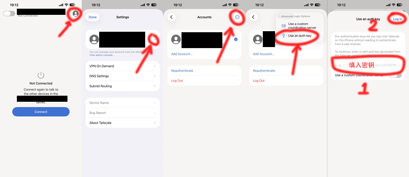
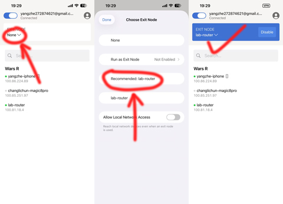

Tailscale 是一种新型的虚拟组网技术，通过在实验室路由器上设置出口节点，可以使虚拟网络内的设备获得与校园网内实体设备相同的网络环境。实现对实验室内网设备、知网和 WOS 等资源的访问。
为实现免费资源配置，实验室的 Tailscale 使用个人账号进行管理，加入该虚拟网络的设备均可查看其余设备的虚拟 IP 地址并能以 LAN 网相互访问设备资源。为确保虚拟网络能长久运行并确保网络安全，请注意如下事项：
Tailscale 支持包括 macOS、iOS、Windows、Linux、Android 在内的全平台，相关客户端可在官网页面下载：https://tailscale.com/download/android
需使用外区账号下载 App，可以加我微信 272874621 或者在 306D快乐群 中@我。
目前提供一个 1.96.4 版本的 xapk 文件下载，请下载 7z文件 解压缩后，使用 xapk 安装器安装。
安装 App 后联系我（微信或群中@）获取密钥，该密钥一次性使用，请勿发送给其他人。密钥具有有效期，请尽快登录使用。
获得密钥后以 iOS 界面为例，使用 auth key 方式登录账号。

登录账号后请联系我，我会在管理后台中授权并设置登录永久不过期。
登录账号后，可直接启用连接。部分平台会要求输入手机密码以设置 VPN 访问权限。
登录账号后，在 EXIT NODE 处点击下拉菜单，选择 lab-router 作为出口节点。

此时设备的访问流量将从实验室路由器发出，如果存在访问不了的情况，请关闭连接后重连尝试。